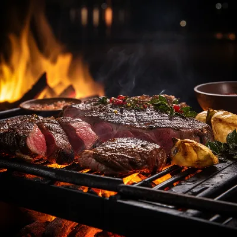
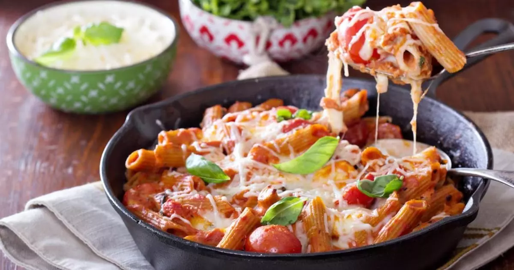
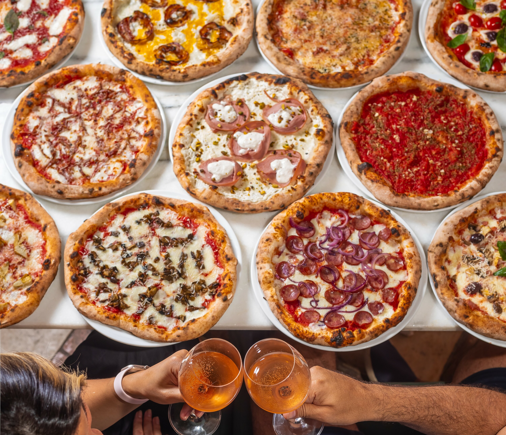
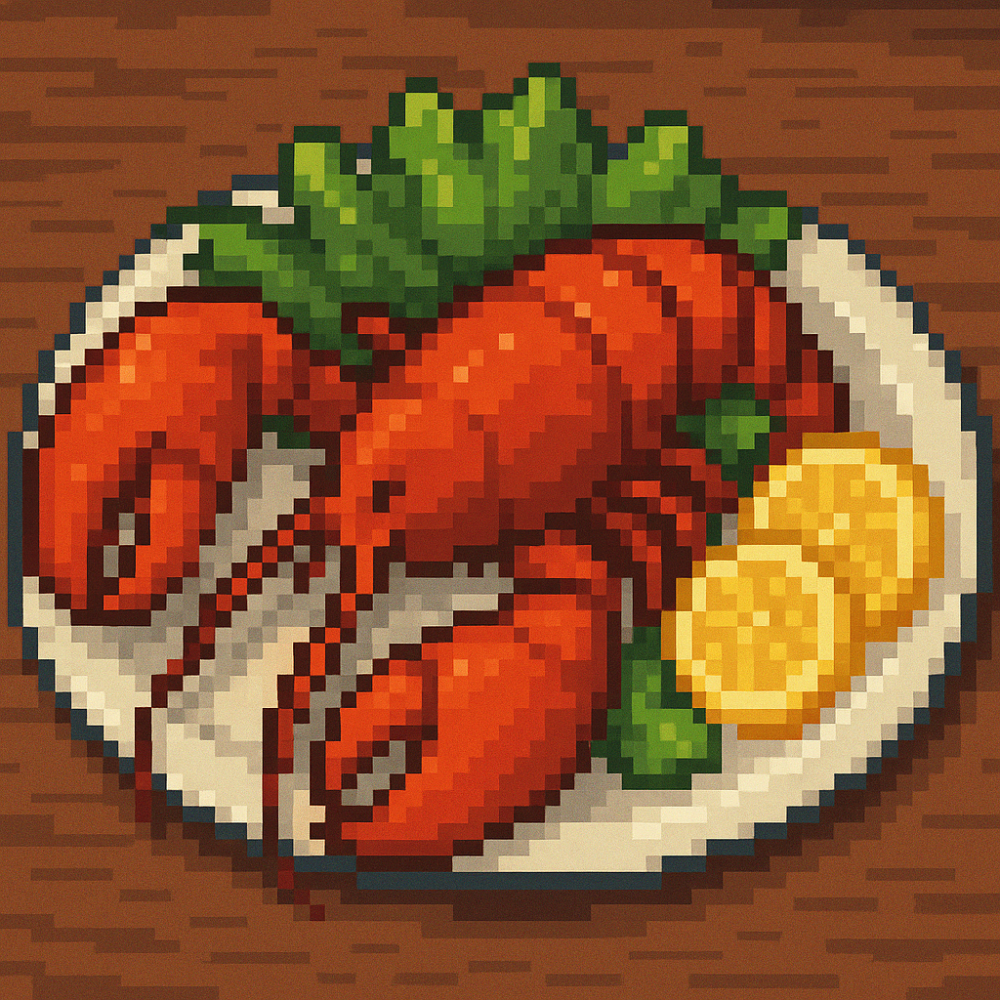
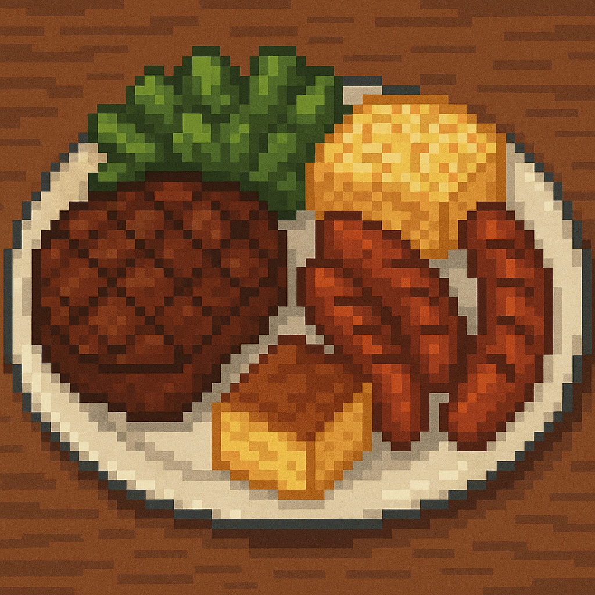
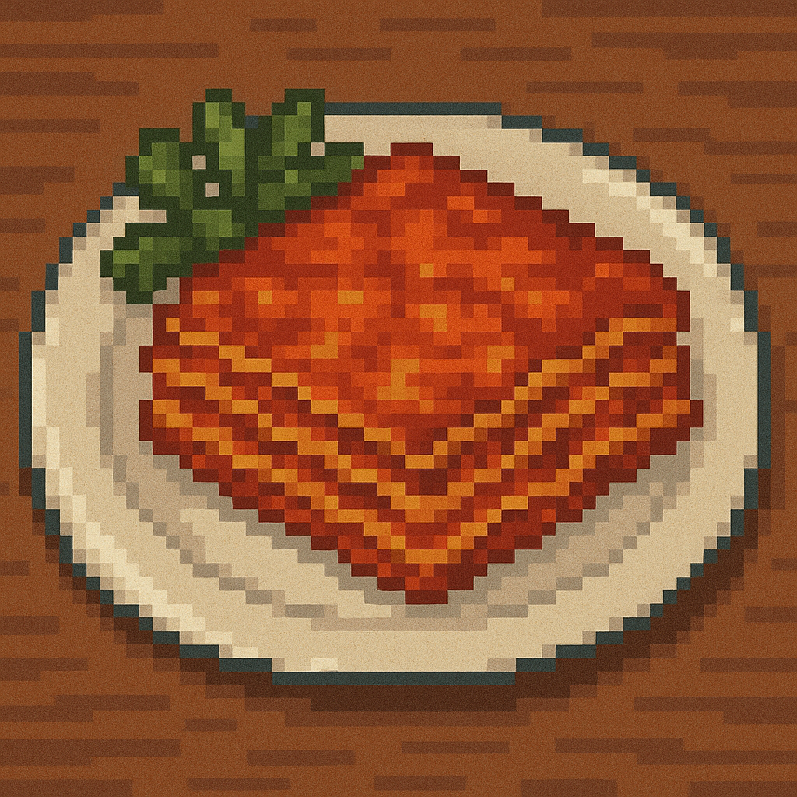
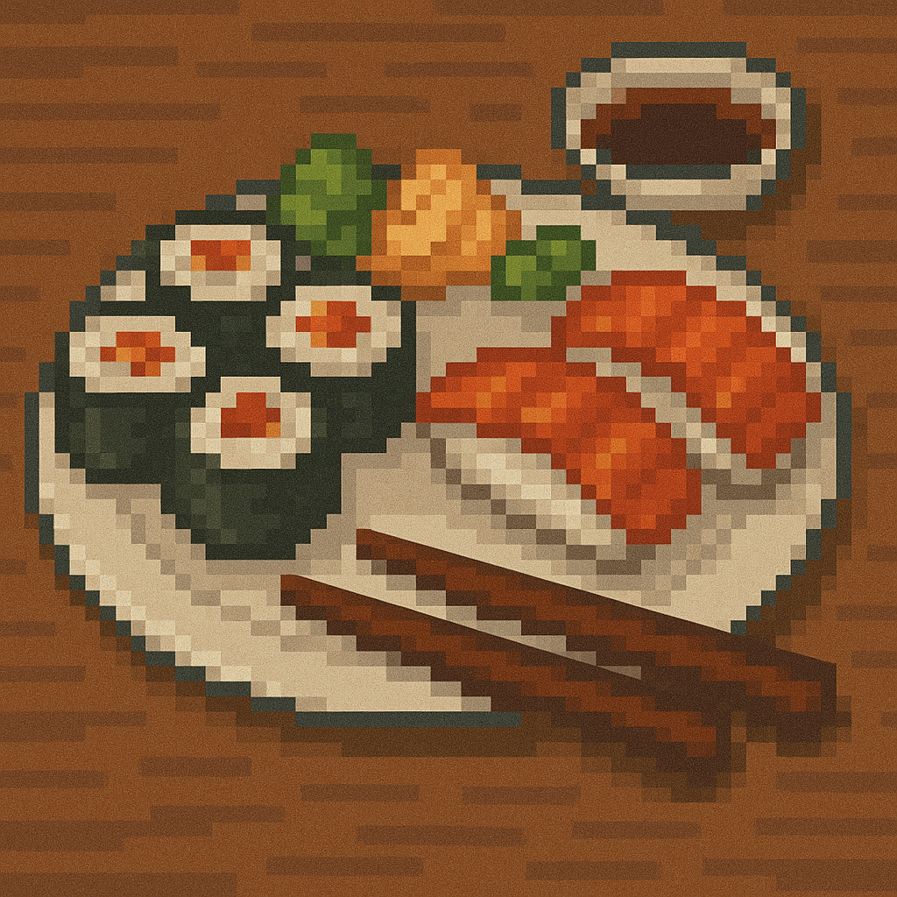
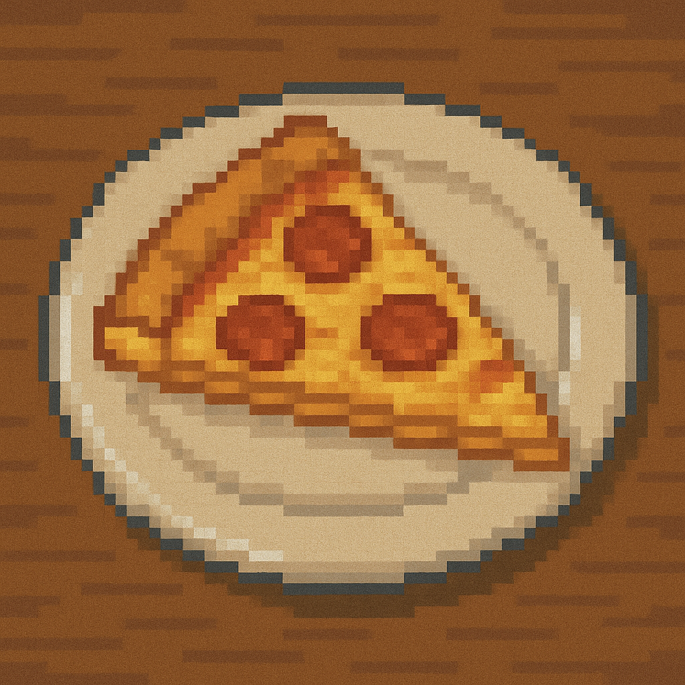

O cardápio dos sonhos!
Seja bem vindo estimado estudante do cefet!
Venha conferir as maravilhas gastronômicas que lhe aguardam durante a sua semana preciosa de estudos!
Cada dia uma nova surpresa para você e seu paladar e é claro, tudo pela pechincha de R$3,20! Pegue seus talheres e venha antes que acabe!
Fora o prato dia, nosso menu também vem com os seguintes acompanhantes:
- Salada completa
- Sucos e refrigerantes
- Diversas frutas
- Bolo e doces de sobremesa
Segunda-Feira
Para começar bem a semana, apresento o prato da casa: Lagosta acompanhada de frutos do mar frescos, pescados ano nosso próprio lago!
Obviamente não se esqueça de antes de comer ter certeza de não ter nenhuma alergia, caso tenha avise-nos que providenciaremos imediatamente uma substituição para você!
Terça-Feira
Já está cansado das suas aulas? tem aula té tarde? Não se preocupe pois nosso churrasco rústico vai te dar energia até o final da semana!
Picanha? Linguiça? Coração de galinha? Não importa qual a sua carne favorita, nosso churrasco tem de tudo e do melhor!

Quarta-Feira
Para nossa quarta nós temos o nosso famoso "dia de massas" que deixaria qualquer italiano encantado e desejando ser nosso aluno!
Nossa cozinhha vai preparar para vocês as melhores lasanhas, macarrões e massas que você vai ver em sua vida, só cuidado coma dieta viu!

Quinta-Feira
Gostaria de apresentar a todos os nossos estudantes nosso novo item do cardápio, comidas asiáticas!
Nosso requintado restaurante agora conta com chefes asiáticos para prover do melhor para os nossos estudantes! Seja sushi, lámen, rolinhos, nosso restaurante tem o
que você deseja!
Sexta-Feira
E é claro que não posso deixar de falar do mais famoso dia da semana da nossa cozinha! Nosso rodízio de pizzas do final da semana!
Temos à sua disposição todos os sabores de pizza que você desejar, seja de pepperoni, portuguesa, calabresa, de frago, desde que não seja de abacaxi nossa cozinha
tem lhe esperando!

Esse é o fim da nossa requintada semana gastronômica e para que seja mais fácil o entendimento da nossa rotina, abaixo estará uma tabela contendo toda a nossa
programação da semana!
| Comida |
Nome |
Dia da semana |
|  | Lagosta e frutos do mar | Segunda-Feira |
|  | Churrasco | Terça-Feira |
|  | Massas | Quarta-Feira |
|  | Comida japonesa | Quinta-Feira |
|  | Rodízio de pizzas | Sexta-Feira |
Agora que já sabe o que lhe espera para comer, nao se esqueça de fazer as suas atividades!